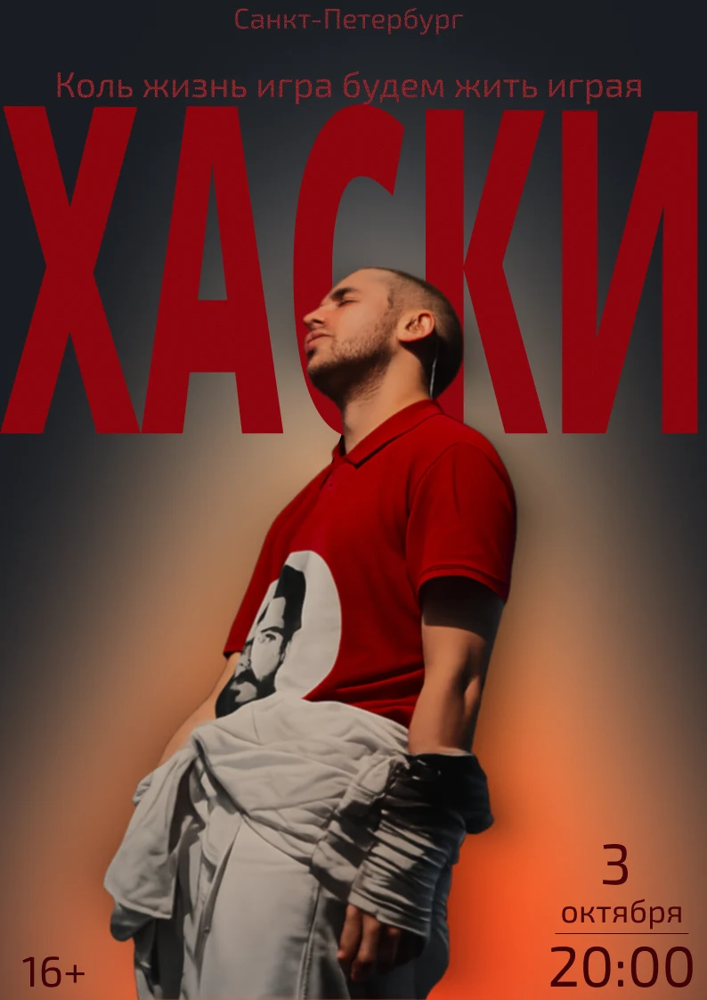
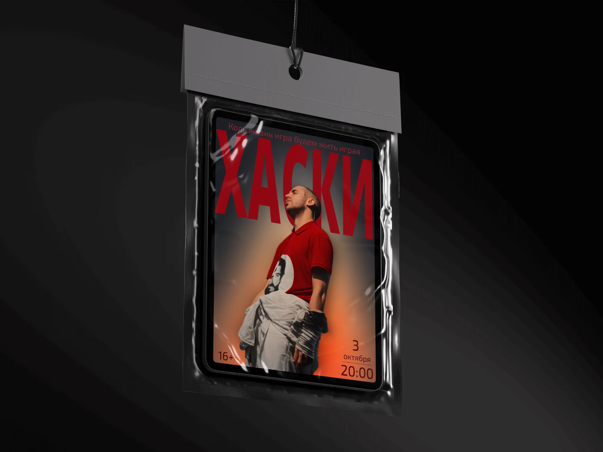
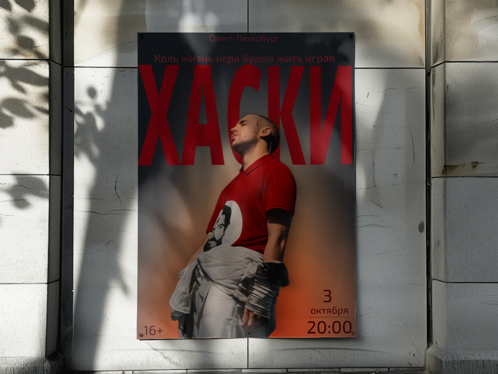
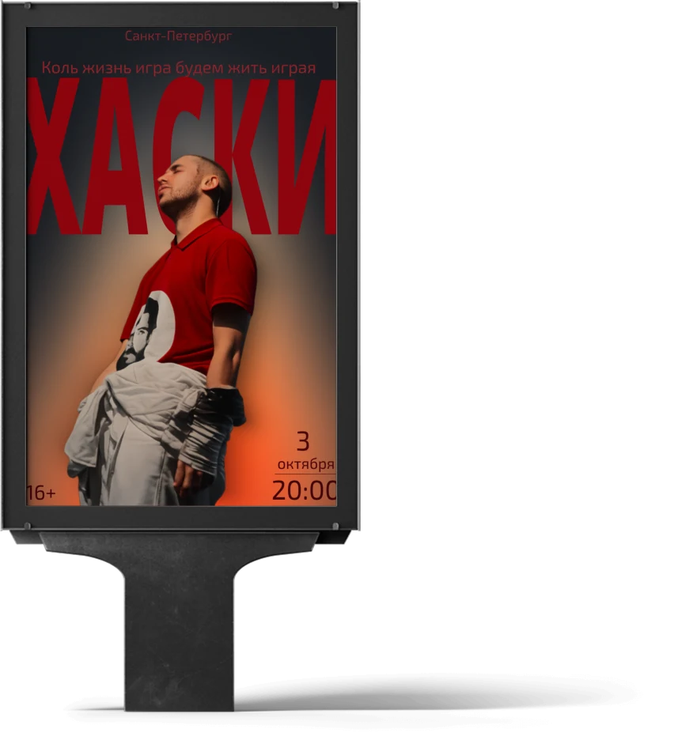

Хаски — концерт
Афиша концерта Хаски в Санкт-Петербурге, 3 октября 20:00, 16+: крупный красный заголовок, перекрытый фигурой артиста на тёплом градиентном фоне.

- Клиент
- Организатор концерта, Санкт-Петербург
- Задача
- Разработать афишу концерта Хаски в Санкт-Петербурге (3 октября, 20:00, 16+) для размещения в городской среде: уличная расклейка, ситиформат-лайтбокс и промо-раздатка.
- Роль
- Графический дизайнер: композиция, типографика, обработка и цветокоррекция фотографии, сборка мокапов размещения.
Афиша строится на одном приёме: гигантское «ХАСКИ» набрано во всю ширину листа, а фигура артиста выходит перед буквами и перекрывает их середину. За счёт этого имя и герой перестают быть двумя слоями — надпись читается как пространство, в котором стоит человек, а не как подпись поверх фото. Строка «Коль жизнь игра будем жить играя» посажена вплотную над заголовком тем же красным, поэтому воспринимается его частью, а не отдельным блоком.
Фон — тёплый градиент от почти чёрного вверху к оранжево-красному свечению у ног: он даёт объём, отделяет фигуру от плоскости и удерживает всю афишу в одной красно-угольной гамме без единого лишнего цвета. Служебная информация разнесена по краям и намеренно не спорит с центром: город — тонкой строкой сверху, «16+» — в левом нижнем углу, дата и время — в правом, где «20:00» подчёркнуто линией и работает как финальная точка чтения.



Афиша собрана под три носителя городской кампании — уличную расклейку, ситиформат-лайтбокс и подвесную промо-раздатку: композиция с заголовком на всю ширину и служебной информацией по углам не разрушается при кадрировании под разные пропорции.